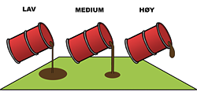

VISKOSITET
Opptaksrate for oljeopptakere referer til pumpekapasitet for vann og derfor vil variere sterkt med hensyn til oljetykkelse og viskositet.
Høyviskøs olje, altså seigtflytende olje, vil for eksempel ha en negativ innvirkning på en overløpsopptaker som da vil ta opp relativt mye vann, men vil ha positiv innvirkning på en adhesjonsopptaker.
For alle typer oljeopptakere vil høy viskositet begrense kapasiteten i pumpe og slange.
Viskositeten til en væske er altså et mål på hvor tungflytende (seig) den er eller hvor stor dens motstand mot bevegelse er.
Viskositeten blir gjerne oppgitt i Centistoke (cSt).
Eksempel på viskositet:
| Lav | |
|---|---|
| cSt | < 10.000 |
| Eksempel | Vann, bensin, diesel, lett fyringsolje |
| Medium | |
| cSt | 10.000 – 50.000 |
| Eksempel | Lett emulsjon, hydraulikkolje, medium / tung olje |
| Høy | |
| cSt | > 50.000 |
| Eksempel | Emulsjon, bunkers C |
